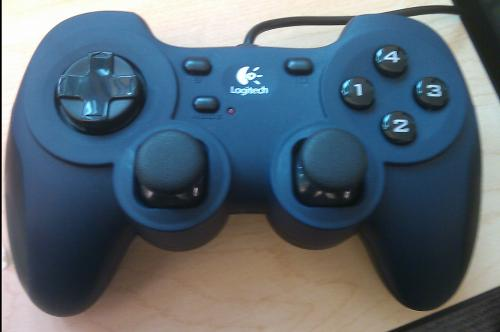

USB PS2 Gamepad
Python Script for Reading Gamepad Events
When given the USB gamepad with the other project supplies we were informed that someone from a previous class had written a script to read info from it. The script was written in Python and used some Python modules to grab the data sent over the USB controller and send it via UART to the Arduino board. To use the script, pygame and pySerial are required on the computer that will be connected to the Arduino board. It was recommended that we use the lab machines to connect the gamepad as pygame and pySerial are already installed. There is also a requirement of a joystick driver which Windows already has built into the operating system. We got the source files from the lab usb drive and began examining the code. Neil had told us that we didn't need to understand the code as it should just work when the gamepad is plugged in. There is also a config file "globalConfig.py" which needed to be modified for the desired baud rate and serial port number of the connected Arduino. We set the debug flag on the python script and launched it. Sure enough gamepad values were printed to the terminal and everything seemed to be working.
Problems with the Script
After awhile, the python script would stop working, complaining of a memory error. After some work it was discovered that the Arduino code was printing debug message to the serial. This was causing the python script to be sending data via UART, but also receiving data via UART. If no serial messages are printed from the Arduino side, there are no longer and script crashes are memory errrors. We can only speculate there are some threading issues or memory leaks that are causing these issues. After solving that issues it has appeared that the communication from the gamepad to the Arduino was working properly and as expected.
Reading Serial Data Sent Via UART
Now that the attached Arduino was receiving the data from the python script, the data now had to be read and interpretted by the Arduino. To do this Neil has put some basic code on his site.
To test what input we were reading from the serial connection we used the BlinkM LED to light different colours depending on the input from the joystick. When we first ran this test we were getting some strange output. The LED would light up, for both the right and left analog joysticks when we were checking two separate bytes of data to determine which colour to light up. After a lot of digging and some monitoring using a FTDI chip that Neil gave us, we figured out that we needed to flush the serial right after we received the correct amount of data. We modified the sample code to read the 18 bytes (of useful data) and then flush the serial. After these modifications, the LED was illuminating correctly and as we had anticipated.